head-cautious

Página interna de revisión (carpeta qa, fuera del ZIP de entrega). En los estáticos, la izquierda es el recorte exacto de las hojas originales de la IA 1 (06-originales) y la derecha, la pieza actual del kit. Todas las parejas están en la hoja estaticos-ia1-vs-nuevo.png. Las animaciones siguen siendo las de la edición 2026-09-25 y se comparan con el material anterior de qa/antes.
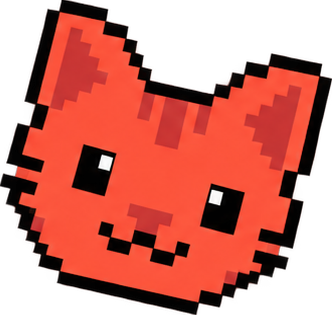
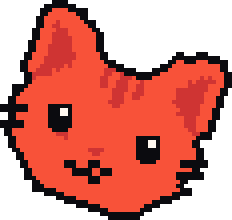
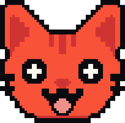
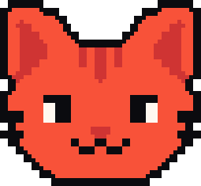

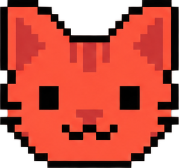
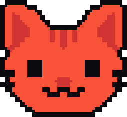

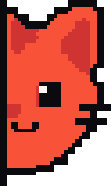
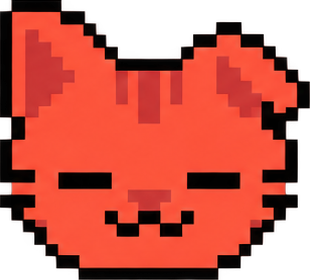


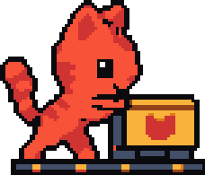
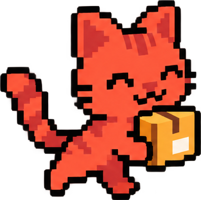
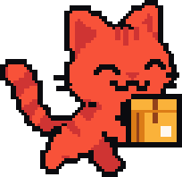
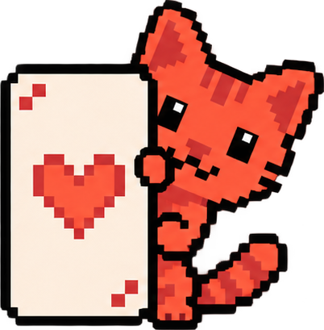
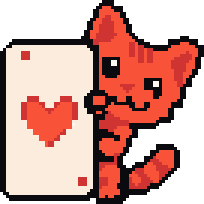
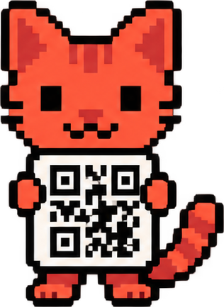
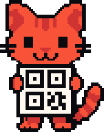


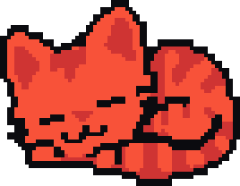
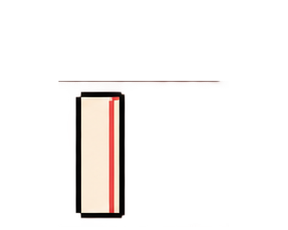

Descubrimiento; algo nuevo por ver
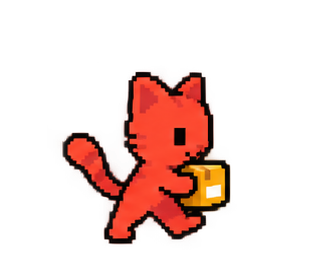

Envío en curso; no indica llegada
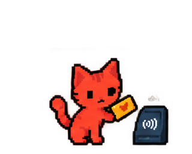
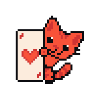
Tarjeta conceptual; no acredita disponibilidad
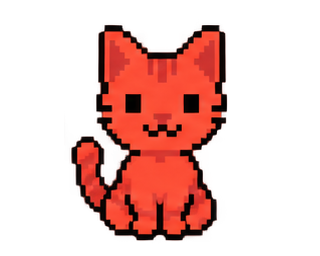

Reposo con más presencia; espera amable
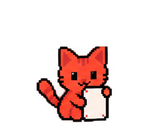

Resultado verificado; mostrar solo con confirmación
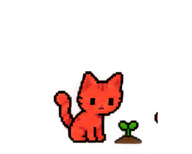

Progreso o ahorro; no anuncia rentabilidad
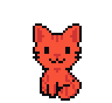
Bienvenida y estados vacíos
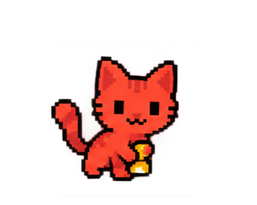

Búsqueda o revisión; no es sello de auditoría

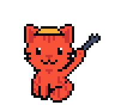
Servicio en mantenimiento; pantalla de excepción
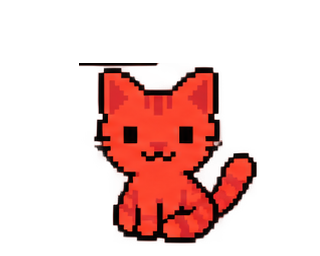
Error recuperable; acompaña un texto claro
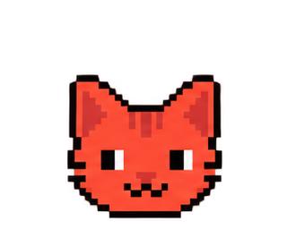

Descubrimiento; invita a explorar

Reposo; reacción mínima a una notificación


Reposo; señal de vida sin distraer
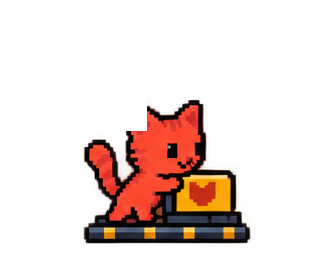

Procesamiento; no indica que el pago llegó
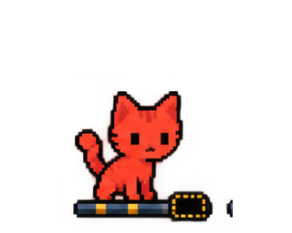
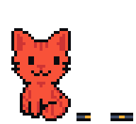
Error recuperable en reparación; texto claro primero

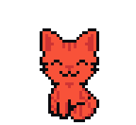
Éxito confirmado; una sola vez

Bienvenida; primer contacto


Seguridad de la cuenta; ilustración, no garantía
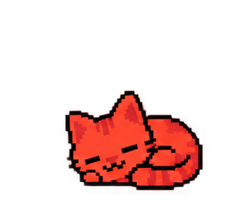
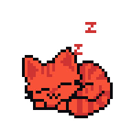
Inactividad o espera larga sin operación en curso

Cambio de activo completado; usar con el estado real